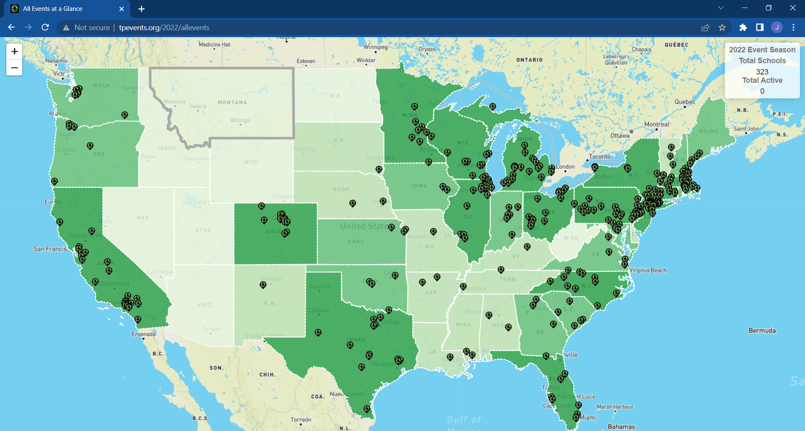
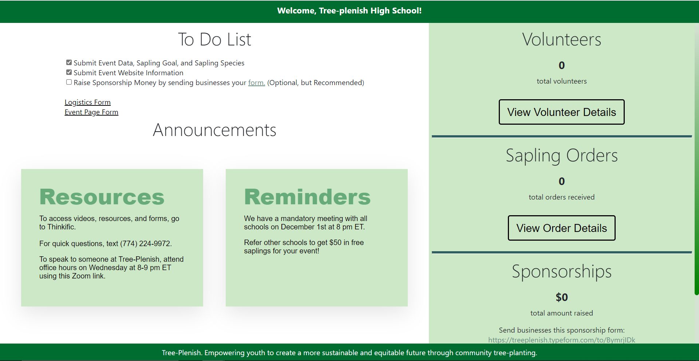

Project Management
Description of Tree-Plenish Project Management and a handful of front end pages & portals developed over the last couple of years by the tech team.
Project Management Overview
Worked with a fluctuating team of up to 8 developers at points, all low/part time.
Personnel breakdown: Data Engineering (1), Analytics (1-2), Back-End (2-3), Front-End (2-3)
Main Constraints: Low Time Commitments, Fully Remote, Sporadic Team Meetings, Quick Turnover.
Strategies: Frequent Communication on Slack & GitHub, Small Group / Project Meetings, One-on-One Retros. Full team timelines (Gantt) and Kanban (Jira).
Below are some of the cumulative results of the DE, Back-End and Front-End efforts of the team.
*Note: I did not work on the code / technical design of the projects below*
Managed Project Samples
Event Pages
2023 events are active at http://tpevents.orgThe map below shows 2022 events, accessible at at http://tpevents.org/2022 
Interactive TP Event map.

Individual Event Page. Automatically generated from form submissions. Available at tpevents.org.
User Access Portal
Password Protected Student Portal. Shown in final stage of event season.